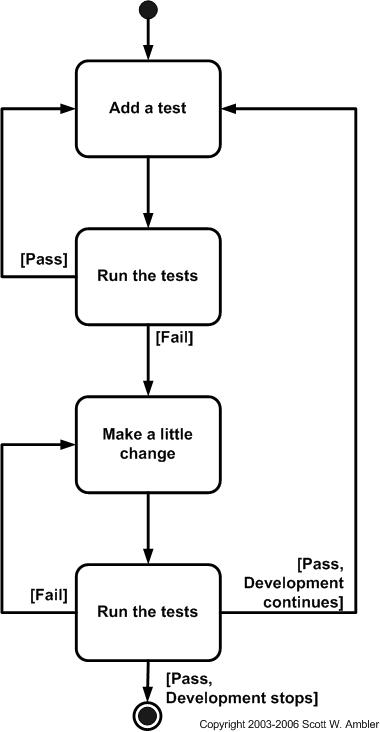

So far we have discussed why we need to study Agile Processes, what an agile process is, and requirements for agile processes. We have looked in depth at Scrum and Extreme Programming as examples of Agile Processes. There are many more processes, none of which have been widely accepted. Some of these other processes will be introduced, but keep in mind that these introductions are very basic and require more research to fully understand the inner workings of the processes.
The Web Helix was developed by George Whitson from the University of Texas as a way to teach agile methodologies in the classroom.
The process uses a spiral approach to developing software. The basic process is covered by the following processes:
The prehelixes and posthelixes are completed once at the beginning and end of the project. Everything else (the development) is completed in a series of iterations. There should be a basic prototype completed at the end of each turn on the helix. A final prototype is the finished web based application.
The augmented web helix is similar to the web helix and was created by the same professor. The augmented web helix is a more incremental and iterative development process as it contains many web helixes as iterations with releases after each web helix.
The slices are a complete web helix process. After each web helix, the product is released. This release can be internally until it is ready to be deployed. Once the product is deployed, work continues with interal releases until it is ready to be deployed. After each portion of the helix slices there is an evalution for that portion. These evaluations help to figure out whether the slice should continue.
Test Driven Development (TDD) is similar to Extreme Programming in the aspect of programming test cases before writing any of the application code. In extreme programming there are test cases developed before the application code and the code is only submitted to the repository after it passes all tests.

In TDD, you write the test first. When the test fails (and it will because there is no application code) you only write enough code to make it pass. The more tests you complete, the better code coverage there is and the less chances for logical bugs to appear in the software. When tests fail after changing the application code, the programmer must refactor the code until all of the tests pass. This ensures fault free programming. It does not necessarily mean that the code will meet the requirements.
Feature Driven Development is a development lifecycle model that is model driven process. It contains short iterations, much like the other agile processes. Each iteration consists of building one or two features of the applications completely. The features are much like the user stories, but are about features instead of stories.
There are eight different practices that are followed in feature driven development.
Each feature is developed independently of each other in this development process.
Sources:
Ambler, Scott W. "Introduction to Test Driven Design (TDD)." 2003. AgileData.org. 1 April 2009 <http://www.agiledata.org/essays/tdd.html>.
Palmer, Stephen R. "A Practical Guide to Feature Driven Development." 2002. Of Software Development: Design, Process, and Tools, etc ... 1 April 2009 <http://www.step-10.com/SoftwareProcess/FeatureDrivenDevelopment/APracticalGuideToFDD.html>.
Subramanian, Nary and George Whitson. "Augmented WebHelix: A Practical Process for Web Engineering." Brandon, Daniel M. Software Engineering for Modern Web Applications: Methodologies and Technologies. Hershey: IGI Global, 2008. 25-52.
Whitson, George. "WebHelix: Another Web Engineering Process." Journal of Computing Sciences in Colleges 21.5 (2006): 21-27.